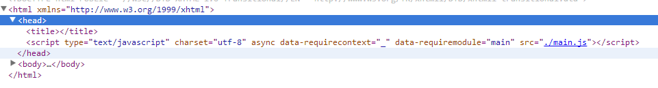

前言
经过昨天的学习，我们大概了解到了requireJS的主要结构，这里先大概的回顾一下
首先从总体结构来说，require这里分为三块：
① newContext之前变量声明或者一些工具函数
② newContext大家伙
③ 解析script标签抽出data-main，并提供几个对外接口
从流程上讲，大概发生了这些事情：
① script标签引入requireJS后，便会初始化一些变量以及函数，并不干实际的事情
② 在主干结构第三步之前会使用req({})调用（并且只会调用一次）newContext方法由此会维护一个newContext的闭包环境，之后的很多变量全在其中
③ 取出script标签中的data-main参数，做第一次简单参数处理（这里有两个全局变量contexts以及cfg比较重要）
在此调用req(cfg)，这里便会进行实际的操作了
所以，关键还是第二次调用req(cfg)，这里由涉及到很多细节的地方了，这里我们便可以关注requirejs方法的细节了：
① 这次调用首先会取出当前上下文环境，然后调用config方法设置属性，最后调用context.require进行实际操作
context = getOwn(contexts, contextName); if (!context) { context = contexts[contextName] = req.s.newContext(contextName); } if (config) { context.configure(config); } return context.require(deps, callback, errback);
② 属性配置结束后便执行localRequire方法，这里会慢慢加载模块了，然后使用
requireMod = getModule(makeModuleMap(null, relMap));
真正加载模块，具体里面真的干了什么，这就是我们今天要学习的内容了，于是我们继续吧
requireJS如何加载data-main文件
这里我们先干一件事情，搞清楚requireJS是如何将script标签中data-main对应的文件加载出来的，这一步搞懂了后，才能知道其它文件如何加载
首先，根据前面的学习，我们知道了
req(cfg) => context.require(config) => context.makeRequire() => localRequire()
而localRequire干了很多事情，我们这里暂时是不关注的，于是主要注意力一到了nextTick上面，于是最终进入了这里的核心getModule
getModule
function getModule(depMap) { var id = depMap.id, mod = getOwn(registry, id); if (!mod) { mod = registry[id] = new context.Module(depMap); } return mod; }
我们前面说了registry里面存储着已经加载好了的模块，而一个模块加载后便不会再加载了，这里的唯一标识是makeModuleMap处理的，我们暂时不予关注
这里没有便会创建，而这里的创建module过程便是我们需要了解的主干流程
mod = registry[id] = new context.Module(depMap);
context.Module
我们这里实例化了一个mod作为返回，并且将之存入了registry对象中，初始化过程中并未做什么特别的事情，但是该模块具备了大量实用方法
然后，将该mod返回给了我们的临时变量requireMod，并且调用了其初始化方法
requireMod.init(deps, callback, errback, { enabled: true });
requireMod.init
这里开始了我们实际的模块初始化逻辑了
① 如果该模块已经初始化便不再执行下面逻辑
② 然后他会将依赖映射取出，这里为了保存原始数组的完整性还做了其它操作
//Do a copy of the dependency array, so that //source inputs are not modified. For example //"shim" deps are passed in here directly, and //doing a direct modification of the depMaps array //would affect that config. this.depMaps = depMaps && depMaps.slice(0);
最后执行了module的enable方法，enable最后会调用this.check
requireMod.check
调用enable方法时，首先会存一个类似于registry的对象enabledRegistry，这个应该与依赖项什么的相关，比如backbone依赖于underscore，这里就应该先加载underscore
但是这里具体干了什么，我们先放一下，先跑主干流程，我们这里直接进入check
PS：这个enable很关键，我们后面一点详细来看看
进入check流程后，马上又跳至了this.fetch
这里首先记录了当前上下文环境的开始时间（此context是所有mod共享的）
context.startTime = (new Date()).getTime();
然后回调用this.load方法，这个方法有可能要加载标签了，这里也是有点东西的，我们稍候再说
然后控制器又回到了context的load手里
//Delegates to req.load. Broken out as a separate function to //allow overriding in the optimizer. load: function (id, url) { req.load(context, id, url); }, req.load = function (context, moduleName, url) { var config = (context && context.config) || {}, node; if (isBrowser) { //In the browser so use a script tag node = req.createNode(config, moduleName, url); node.setAttribute('data-requirecontext', context.contextName); node.setAttribute('data-requiremodule', moduleName); if (node.attachEvent && !(node.attachEvent.toString && node.attachEvent.toString().indexOf('[native code') < 0) && !isOpera) { useInteractive = true; node.attachEvent('onreadystatechange', context.onScriptLoad); } else { node.addEventListener('load', context.onScriptLoad, false); node.addEventListener('error', context.onScriptError, false); } node.src = url; currentlyAddingScript = node; if (baseElement) { head.insertBefore(node, baseElement); } else { head.appendChild(node); } currentlyAddingScript = null; return node; } else if (isWebWorker) { try { importScripts(url); context.completeLoad(moduleName); } catch (e) { context.onError(makeError('importscripts', 'importScripts failed for ' + moduleName + ' at ' + url, e, [moduleName])); } } };
这里做了很多兼容性处理，我们直接抽取主干逻辑即可，这里是重头戏了：
① 使用createNode创建script标签
req.createNode = function (config, moduleName, url) { var node = config.xhtml ? document.createElementNS('http://www.w3.org/1999/xhtml', 'html:script') : document.createElement('script'); node.type = config.scriptType || 'text/javascript'; node.charset = 'utf-8'; node.async = true; return node; };
这里创建标签后给其注入了一些自定义属性，并且绑定了一个事件（这里各个浏览器可能不同，我们关注标准的）
node.addEventListener('load', context.onScriptLoad, false);
onScriptLoad: function (evt) { if (evt.type === 'load' || (readyRegExp.test((evt.currentTarget || evt.srcElement).readyState))) { interactiveScript = null; var data = getScriptData(evt); context.completeLoad(data.id); } },
然后将该节点插入head中
head.appendChild(node);
于是头部多出了这么一块东西

此段js加载结束后马上执行调用onScriptLoad方法，但是，我们写在main.js中的逻辑会被调用，该函数暂时看来是执行一些资源清理工作
并且会将该节点存储起来
PS：注意啦，这里可能会有一定时序性问题，整个这块逻辑我们还需要整理
看到这里，我们基本明白了，我们第一个文件，main.js是如何加载出来的了
一个简单的例子
为了帮助理解，我们这里以一个简单的例子做说明，再看看源码的实现
HTML
<html xmlns="http://www.w3.org/1999/xhtml"> <head> <title></title> </head> <body> <script src="require.js" type="text/javascript" data-main="main.js"></script> </body> </html>
main.js
require.config({ baseUrl: '', paths: { 'nameDep': 'js/nameDep', 'say': 'js/say', 'name': 'js/name' }, shim: { 'name': { deps: ['nameDep'] } } }); require(['name', 'say'], function (name, say) { say(name); });
name/say
//name
define([''], function () { return '测试'; });
//say define([], function () { return function (name) { console.log(name); }; });
由上面的逻辑来看，当main.js加载结束后于是就该进行下一个逻辑的处理，我们这里看看他是如何处理的呢，这个时候第一个入口便是require.config了
require.config
这个时候会传一些有意义的参数进来了
整个config依旧在做参数设置，这个这个操作实际的意义是为newContext中的config赋值，并在localRequire中使用
接下来顺理成章的再次进入了模块实例化的步骤
requireMod = getModule(makeModuleMap(null, relMap));
最后进入上面提到的初始化环节，但是内部会有不一样的细节处理（我们暂时不予关注，留着下次学习）这里每一次加载会清除前面的registry
config的设置并不会触发script标签的加载，所以其实际加载还是下面的require，这块的逻辑又有点小复杂了......
PS：这里设置断点调试时序上好像有点问题，所以这块暂时就不处理了，应该与其维护的队列有关，留待下次解决吧
结语
通过这两天的学习，我们大概了解了requireJS的一些东西，但是还是那句话，小钗感觉requireJS读起来还是有点小难，不是那么好吸收
关于他的学习，还需要慢慢来哦，感觉里面水有点深......